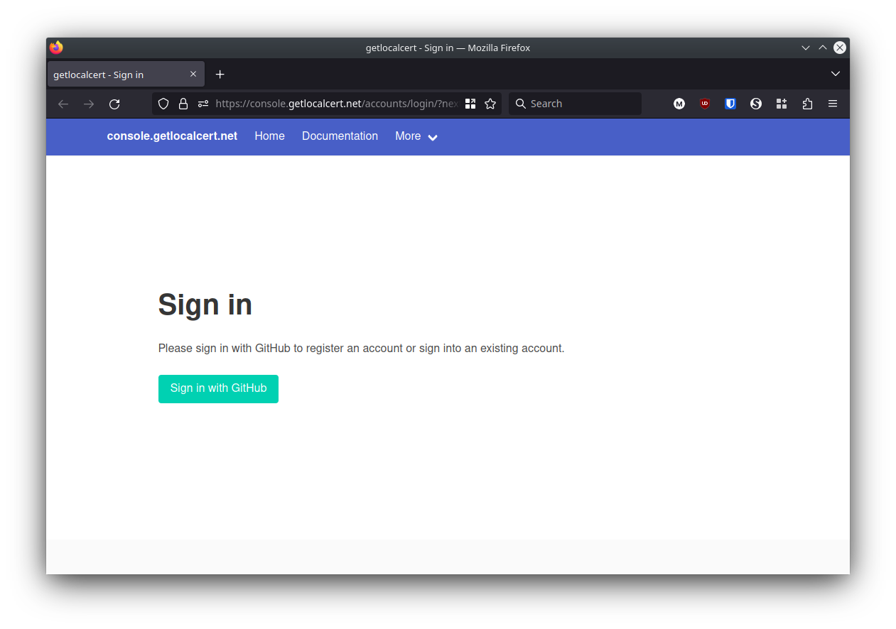
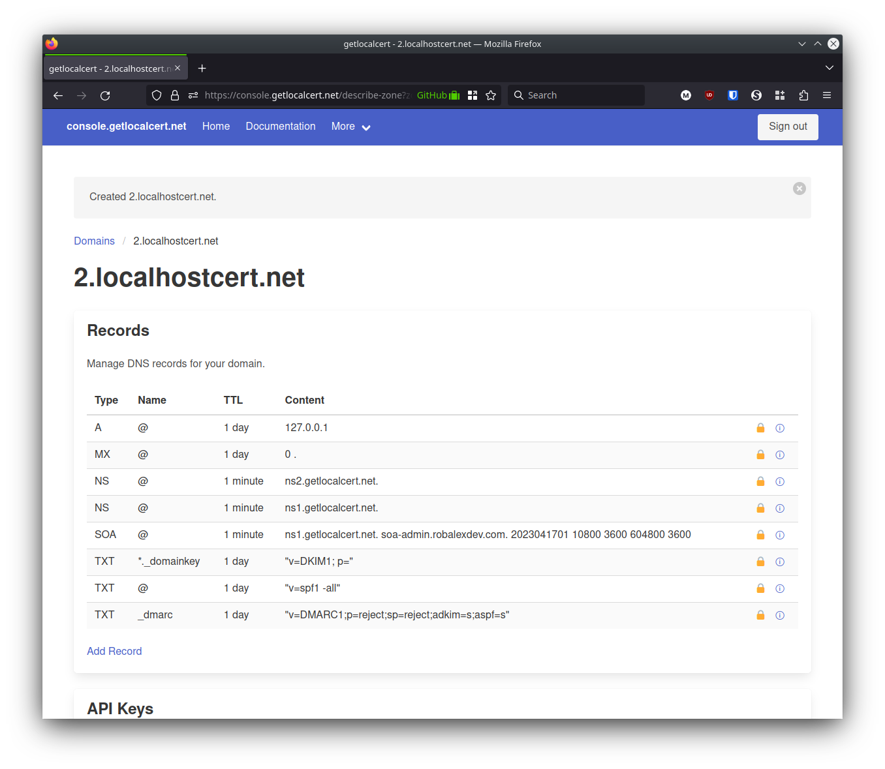
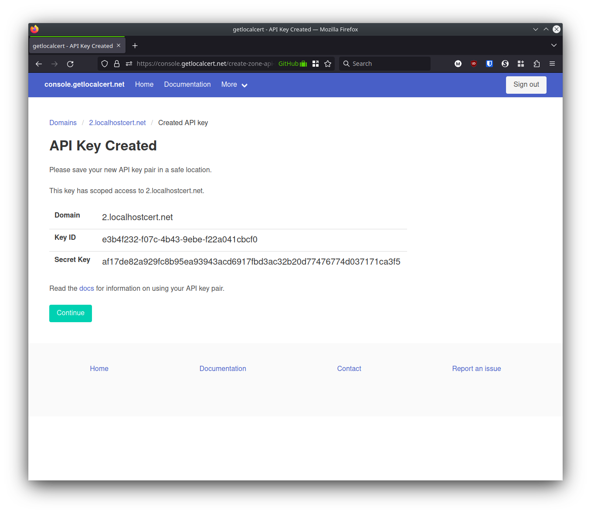
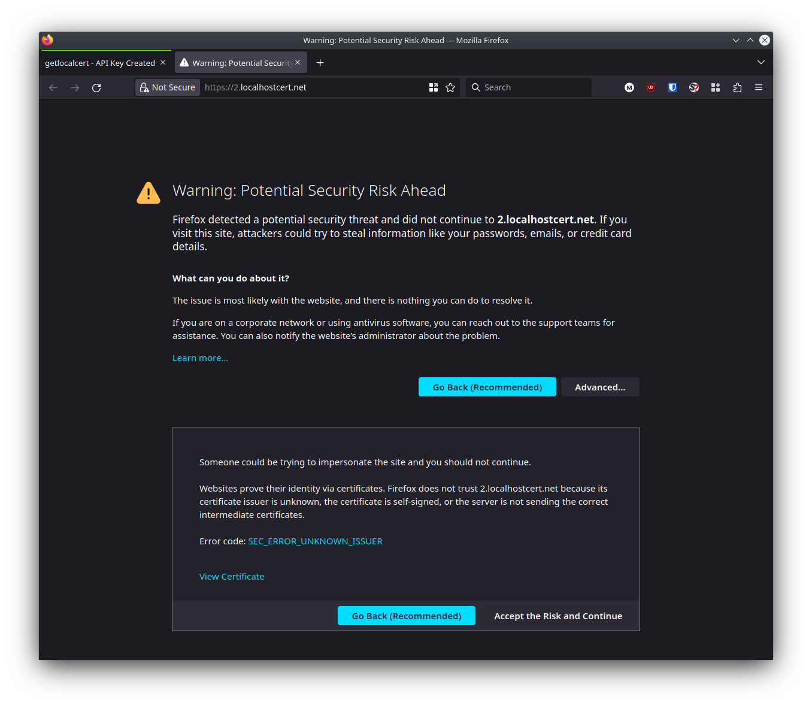
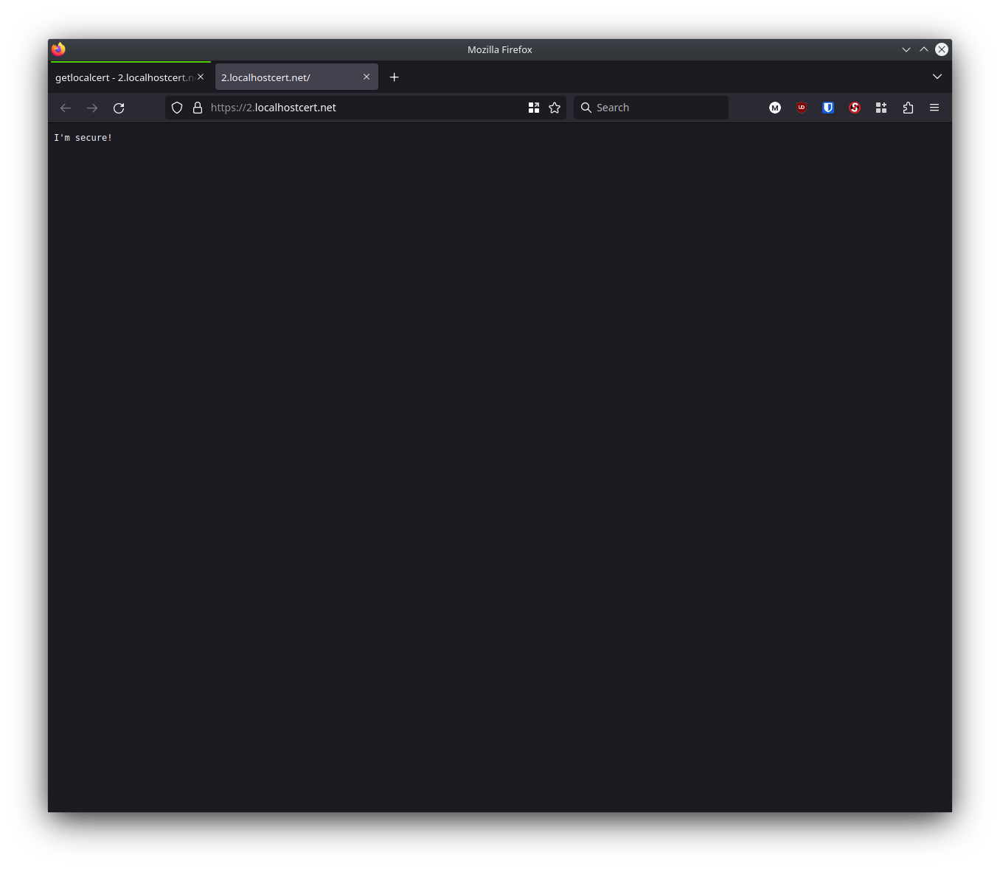

For the last couple months I've been fanatic about understanding why HTTPS adoption on private networks is so poor, and so poorly implemented. I believe the challenge comes down to poor usability of the ACME certificate issuance protocols in the context of private networks, small but meaningful cost pressures, and legacy momentum. I'm excited to share a service that I believe can address these shortcomings and improve network security while decreasing toil.
In this post I share the launch of getlocalcert.net. Learn how the service can help you issue HTTPS certificates that are suitable for use on localhost, private networks, and internal networks. I walk through account registration, installation, and configuration of the Caddy web server for automated certificate issuance.
With a nod to the popular Let's Encrypt project, which helped the public Internet transition from 25% to 80% of web pages using HTTPS over the last ten years, the goal of getlocalcert.net is to increase adoption of HTTPS on private networks through better tooling, improved documentation, a free subdomain name registrar, and a free DNS service. Our model uses globally trusted HTTPS certificates from certificate authorities (CAs) that support the ACME DNS-01 protocol, such as the free domain validated (DV) certificates of Let's Encrypt and ZeroSSL1. These HTTPS certificates are preferred over self-signed certificates and private CAs as they require the least amount of configuration management on end-user devices.
While I rarely encounter HTTP-only websites on the Internet these days, they are still quite common on private networks. When HTTPS is used, it's often via private CAs. A private CA requires complex roll-out of the root certificate into every device on the network. If misused, the root certificate could enable a man-in-the-middle (MITM) attack against every website on the Internet. Further, managing certificate renewals can be a complicated manual process, resulting in unneeded toil, expired certificates, and broken websites.
Web browsers are pushing HTTPS adoption forward by disabling or limiting features like service workers, CORS, geolocation, device orientation, notifications, and caching on insecure webpages. Performance improvements in HTTP/2, and HTTP/3 have drastically improved performance, but only support encrypted connections. Websites run on private networks may benefit from these modern features, so a proper HTTPS deployment is valuable.
getlocalcert is now available for early access and a subset of the planned roadmap has been implemented. As of today, getlocalcert supports:
Already, this limited feature set offers a number of advantages.
I configured a simple HTTPS website that used the Caddy web server, a free .localhostcert.net subdomain from getlocalcert, and a free Let's Encrypt HTTPS certificate. If you're already familiar with Linux system administration tasks then this process should take about five to ten minutes to replicate.
First I opened console.getlocalcert.net to register an account. I needed to sign in with my GitHub account, but we'll eventually support email/password as well.

I logged in and I clicked the Create free domain button. The service assigned me a globally unique subdomain name (2.localhostcert.net).
Here's my domain details page, showing that several default DNS records were present and were locked. These locked records keep getlocalcert focused on our niche: private networks.

At the bottom of the page I saw the section for API keys, although none existed yet. I created one by clicking Create new API key.
The next page shows the API key. You'll want to save yours in a password manager, credential vault, or similar secure storage. Don't commit these to a git repository. If you accidentally expose your API key you can delete it from the listing on the previous page. I deleted mine before publishing this blog post.

I used these credentials for the rest of the setup. If you're following along, you should substitute your own values anywhere you see these.
Domain 2.localhostcert.net
Key ID e3b4f232-f07c-4b43-9ebe-f22a041cbcf0
Secret Key af17de82a929fc8b95ea93943acd6917fbd3ac32b20d77476774d037171ca3f5Next I set up Caddy.
Caddy supports getlocalcert using the ACME-DNS module, which isn't in the default build. There's currently an issue impacting Caddy builds, so I needed to build Caddy using a non-standard approach.
$ go install github.com/caddyserver/xcaddy/cmd/xcaddy@latest
$ xcaddy build --with github.com/caddy-dns/acmedns --with github.com/caddyserver/caddy/v2=github.com/caddyserver/caddy/v2@v2.6.4I created a minimal Caddy file:
2.localhostcert.net {
tls {
ca https://acme-staging-v02.api.letsencrypt.org/directory
resolvers ns1.getlocalcert.net:53
dns acmedns credentials.json
}
respond "I'm secure!"
}Notice that I used the Let's Encrypt staging environment. I didn't want to use Let's Encrypt production yet as it has strict rate limits, best practice is to confirm everything is working in staging first.
I saved my getlocalcert credentials to a JSON file. Many ACME clients support a credentials file of this format.
{
"username": "e3b4f232-f07c-4b43-9ebe-f22a041cbcf0",
"password": "af17de82a929fc8b95ea93943acd6917fbd3ac32b20d77476774d037171ca3f5",
"fulldomain": "2.localhostcert.net",
"subdomain": "2",
"server_url": "https://api.getlocalcert.net/api/v1/acme-dns-compat",
"allowfrom": []
}All set, I started Caddy and watched the certificate issuance process in the log output:
$ sudo ./caddy run
2023/04/17 11:46:48.630 INFO using adjacent Caddyfile
2023/04/17 11:46:48.633 WARN Caddyfile input is not formatted; run the 'caddy fmt' command to fix inconsistencies {"adapter": "caddyfile", "file": "Caddyfile", "line": 2}
2023/04/17 11:46:48.634 INFO admin admin endpoint started {"address": "localhost:2019", "enforce_origin": false, "origins": ["//localhost:2019", "//[::1]:2019", "//127.0.0.1:2019"]}
2023/04/17 11:46:48.635 INFO tls.cache.maintenance started background certificate maintenance {"cache": "0xc00071ccb0"}
2023/04/17 11:46:48.635 INFO http server is listening only on the HTTPS port but has no TLS connection policies; adding one to enable TLS {"server_name": "srv0", "https_port": 443}
2023/04/17 11:46:48.635 INFO http enabling automatic HTTP->HTTPS redirects {"server_name": "srv0"}
2023/04/17 11:46:48.635 INFO tls cleaning storage unit {"description": "FileStorage:/root/.local/share/caddy"}
2023/04/17 11:46:48.636 INFO http enabling HTTP/3 listener {"addr": ":443"}
2023/04/17 11:46:48.636 INFO failed to sufficiently increase receive buffer size (was: 208 kiB, wanted: 2048 kiB, got: 416 kiB). See https://github.com/quic-go/quic-go/wiki/UDP-Receive-Buffer-Size for details.
2023/04/17 11:46:48.636 INFO http.log server running {"name": "srv0", "protocols": ["h1", "h2", "h3"]}
2023/04/17 11:46:48.636 INFO http.log server running {"name": "remaining_auto_https_redirects", "protocols": ["h1", "h2", "h3"]}
2023/04/17 11:46:48.636 INFO http enabling automatic TLS certificate management {"domains": ["2.localhostcert.net"]}
2023/04/17 11:46:48.637 INFO tls.obtain acquiring lock {"identifier": "2.localhostcert.net"}
2023/04/17 11:46:48.643 INFO autosaved config (load with --resume flag) {"file": "/root/.config/caddy/autosave.json"}
2023/04/17 11:46:48.643 INFO serving initial configuration
2023/04/17 11:46:48.643 INFO tls.obtain lock acquired {"identifier": "2.localhostcert.net"}
2023/04/17 11:46:48.643 INFO tls.obtain obtaining certificate {"identifier": "2.localhostcert.net"}
2023/04/17 11:46:48.644 INFO tls finished cleaning storage units
2023/04/17 11:46:48.645 INFO http waiting on internal rate limiter {"identifiers": ["2.localhostcert.net"], "ca": "https://acme-staging-v02.api.letsencrypt.org/directory", "account": ""}
2023/04/17 11:46:48.645 INFO http done waiting on internal rate limiter {"identifiers": ["2.localhostcert.net"], "ca": "https://acme-staging-v02.api.letsencrypt.org/directory", "account": ""}
2023/04/17 11:46:51.412 INFO http.acme_client trying to solve challenge {"identifier": "2.localhostcert.net", "challenge_type": "dns-01", "ca": "https://acme-staging-v02.api.letsencrypt.org/directory"}
2023/04/17 11:46:58.936 INFO http.acme_client authorization finalized {"identifier": "2.localhostcert.net", "authz_status": "valid"}
2023/04/17 11:46:58.936 INFO http.acme_client validations succeeded; finalizing order {"order": "https://acme-staging-v02.api.letsencrypt.org/acme/order/97940454/8307430944"}
2023/04/17 11:47:03.087 INFO http.acme_client successfully downloaded available certificate chains {"count": 1, "first_url": "https://acme-staging-v02.api.letsencrypt.org/acme/cert/fac3ff3f1f21bf70c004cb2ef0a7e7871e01"}
2023/04/17 11:47:03.087 INFO tls.obtain certificate obtained successfully {"identifier": "2.localhostcert.net"}
2023/04/17 11:47:03.087 INFO tls.obtain releasing lock {"identifier": "2.localhostcert.net"}Once I saw certificate obtained successfully I knew I had passed the ACME DNS-01 challenge. I checked my work by loading 2.localhostcert.net in Firefox. The SEC_ERROR_UNKNOWN_ISSUER, error message I got here was expected as Firefox doesn't trust the Let's Encrypt staging environment.
If you see an issue at this step, spend some time debugging here before proceeding, or ask for help.

Finally, I commented out (#) the ca https://acme-staging-v02.api.letsencrypt.org/directory line in my Caddyfile and ran Caddy again. This time a certificate was issued by Let's Encrypt production.
$ sudo ./caddy run
2023/04/17 12:36:33.123 INFO using adjacent Caddyfile
2023/04/17 12:36:33.124 WARN Caddyfile input is not formatted; run the 'caddy fmt' command to fix inconsistencies {"adapter": "caddyfile", "file": "Caddyfile", "line": 2}
2023/04/17 12:36:33.125 INFO admin admin endpoint started {"address": "localhost:2019", "enforce_origin": false, "origins": ["//localhost:2019", "//[::1]:2019", "//127.0.0.1:2019"]}
2023/04/17 12:36:33.125 INFO http server is listening only on the HTTPS port but has no TLS connection policies; adding one to enable TLS {"server_name": "srv0", "https_port": 443}
2023/04/17 12:36:33.125 INFO http enabling automatic HTTP->HTTPS redirects {"server_name": "srv0"}
2023/04/17 12:36:33.125 INFO tls.cache.maintenance started background certificate maintenance {"cache": "0xc0004a1420"}
2023/04/17 12:36:33.126 INFO http enabling HTTP/3 listener {"addr": ":443"}
2023/04/17 12:36:33.126 INFO failed to sufficiently increase receive buffer size (was: 208 kiB, wanted: 2048 kiB, got: 416 kiB). See https://github.com/quic-go/quic-go/wiki/UDP-Receive-Buffer-Size for details.
2023/04/17 12:36:33.126 INFO tls cleaning storage unit {"description": "FileStorage:/root/.local/share/caddy"}
2023/04/17 12:36:33.126 INFO http.log server running {"name": "srv0", "protocols": ["h1", "h2", "h3"]}
2023/04/17 12:36:33.126 INFO http.log server running {"name": "remaining_auto_https_redirects", "protocols": ["h1", "h2", "h3"]}
2023/04/17 12:36:33.126 INFO http enabling automatic TLS certificate management {"domains": ["2.localhostcert.net"]}
2023/04/17 12:36:33.126 INFO autosaved config (load with --resume flag) {"file": "/root/.config/caddy/autosave.json"}
2023/04/17 12:36:33.126 INFO serving initial configuration
2023/04/17 12:36:33.126 INFO tls.obtain acquiring lock {"identifier": "2.localhostcert.net"}
2023/04/17 12:36:33.126 INFO tls finished cleaning storage units
2023/04/17 12:36:33.128 INFO tls.obtain lock acquired {"identifier": "2.localhostcert.net"}
2023/04/17 12:36:33.128 INFO tls.obtain obtaining certificate {"identifier": "2.localhostcert.net"}
2023/04/17 12:36:33.129 INFO http waiting on internal rate limiter {"identifiers": ["2.localhostcert.net"], "ca": "https://acme-v02.api.letsencrypt.org/directory", "account": ""}
2023/04/17 12:36:33.129 INFO http done waiting on internal rate limiter {"identifiers": ["2.localhostcert.net"], "ca": "https://acme-v02.api.letsencrypt.org/directory", "account": ""}
2023/04/17 12:36:35.711 INFO http.acme_client trying to solve challenge {"identifier": "2.localhostcert.net", "challenge_type": "dns-01", "ca": "https://acme-v02.api.letsencrypt.org/directory"}
2023/04/17 12:37:24.835 INFO http.acme_client authorization finalized {"identifier": "2.localhostcert.net", "authz_status": "valid"}
2023/04/17 12:37:24.835 INFO http.acme_client validations succeeded; finalizing order {"order": "https://acme-v02.api.letsencrypt.org/acme/order/1045720427/176726196257"}
2023/04/17 12:37:26.070 INFO http.acme_client successfully downloaded available certificate chains {"count": 2, "first_url": "https://acme-v02.api.letsencrypt.org/acme/cert/03817779c7260245ea0d498f95038c0fa9a2"}
2023/04/17 12:37:26.070 INFO tls.obtain certificate obtained successfully {"identifier": "2.localhostcert.net"}
2023/04/17 12:37:26.070 INFO tls.obtain releasing lock {"identifier": "2.localhostcert.net"}The certificate was issued and I reloaded 2.localhostcert.net in Firefox. Now that Caddy was using a Let's Encrypt production certificate, I no longer saw the certificate warning message. My web page is pretty boring, but it's loading over a secure HTTP/2 connection.

If you follow these steps you'll find that Caddy manages HTTPS certificate renewals automatically, so there's minimal manual maintenance toil.
In just a couple minutes I've registered a free subdomain, configured a web server, and issued a free HTTPS certificate that my web browser immediately trusted. But this was just a quick demo, so there's some additional things you'll want to try next. You'll probably want to configure Caddy to do something useful, so head to the Caddy docs to learn more.
Check out the docs to learn about several additional supported tools. Prefer to use acme.sh with NGINX? That's compatible with getlocalcert too!
If you'd like to host multiple subdomains, you'll currently need to use a wildcard certificate. Support for proper subdomains management is on the roadmap, but for now you can ask Caddy to request a wildcard certificate using:
*.2.localhostcert.net, 2.localhostcert.net {
tls {
dns acmedns credentials.json
}
}A great reference for this setup is here.
If you'd like to access your web server from a different computer on the same network, you can do this by changing your local DNS settings. An easy approach is to edit your hosts file. You'll add an entry like:
192.168.1.105 2.localhostcert.netOr if you've setup a wildcard certificate:
192.168.1.21 radarr.2.localhostcert.net
192.168.1.22 heimdall.2.localhostcert.net
192.168.1.23 vaultwarden.2.localhostcert.netAlternatively, if you run a DNS server like Unbound you can manage your DNS resolution on that server. A simple Unbound view to remap 2.localhostcert.net to 192.168.1.105 looks like:
access-control-view: 192.168.0.0/16 "localhostcert"
view:
name: "localhostcert"
view-first: yes
local-zone: "2.localhostcert.net" redirect
local-data: "2.localhostcert.net IN A 192.168.1.105"These work best with static IP addressing. Read on in the DNS docs for more help.
There's a lot of improvements planned:
I'd love to hear your thoughts as well.
Check out the discussion of the getlocalcert security model and roadmap in the docs. None of what we've discussed so far is valuable if it doesn't provide suitable security, and as such, security remains a primary focus of the project. More details will be provided as we grow.
Please give us a try.
I hope you'll find that getlocalcert can simplify HTTPS certificate management for private networks.
If you'd like updates on this and other projects, check out the subscription information below.
Hello! I'm Robert Alexander, a freelance software developer and security consultant. This blog features some of my work and thoughts on software, the cloud, and security. You can get updates on my posts with your favorite RSS client or on Substack. I'm also on Mastodon.